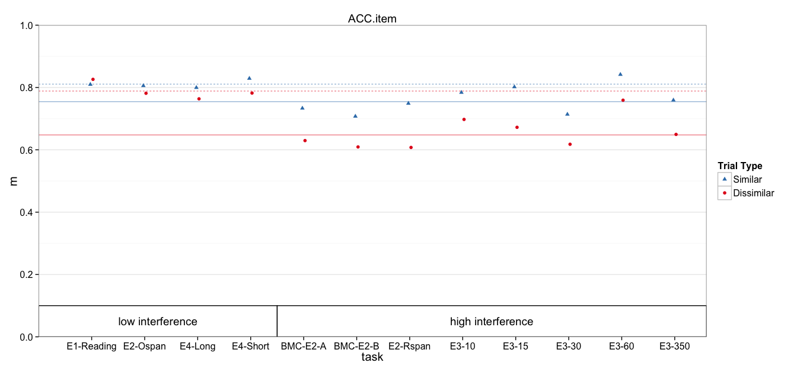

Multilevel model of accuracy
Params:
params
$dv_var
[1] "ACC.item"
$nsim
[1] 10000
$plot_ymax
[1] 1
$plot_yshift
[1] 0
Read in data
DV_VAR = params$dv_var
all.dat = read.csv('data/1_scored.csv')
all.dat$Subject = factor(all.dat$Subject)
all.dat$dv = all.dat[,DV_VAR]
# Remove regular ospan, which has substantially lower accuracy
# due to verification requirements
dat = subset(all.dat, !task %in% 'Ospan.reg')
# Mark high and low interference conditions
low_int = c('spOspan.noVer', 'Ospan.scram.noVer', 'Rspan.names.long', 'Rspan.names.short', 'Ospan.reg')
dat$interference = ifelse(dat$task %in% low_int, 'low', 'high')
Models
dat$cond = paste(dat$interference, dat$trialtype)
contrasts(dat$trialtype) <- c(0,1) # similarity increment
Model with recall predictions for each interference:trialtype explicit
fit.mlm = lmer(dv ~ 0 + cond + (1 | task:Subject) + (1 | task), data=dat)
summary(fit.mlm)
Linear mixed model fit by REML ['lmerMod']
Formula: dv ~ 0 + cond + (1 | task:Subject) + (1 | task)
Data: dat
REML criterion at convergence: -604.2
Scaled residuals:
Min 1Q Median 3Q Max
-2.50496 -0.49645 0.01264 0.50477 2.32377
Random effects:
Groups Name Variance Std.Dev.
task:Subject (Intercept) 0.0112915 0.10626
task (Intercept) 0.0003014 0.01736
Residual 0.0041352 0.06431
Number of obs: 368, groups: task:Subject, 184; task, 12
Fixed effects:
Estimate Std. Error t value
condhigh D 0.64776 0.01333 48.58
condhigh S 0.75458 0.01333 56.59
condlow D 0.78859 0.01702 46.32
condlow S 0.81071 0.01702 47.62
Correlation of Fixed Effects:
cndhgD cndhgS cndlwD
condhigh S 0.792
condlow D 0.000 0.000
condlow S 0.000 0.000 0.802
Same model contrast coded for similarity benefit
fit.mlm.con = lmer(dv ~ 0 + interference/trialtype + (1 | task:Subject) + (1 | task), data=dat)
summary(fit.mlm.con)
Linear mixed model fit by REML ['lmerMod']
Formula: dv ~ 0 + interference/trialtype + (1 | task:Subject) + (1 | task)
Data: dat
REML criterion at convergence: -604.2
Scaled residuals:
Min 1Q Median 3Q Max
-2.50496 -0.49645 0.01264 0.50477 2.32377
Random effects:
Groups Name Variance Std.Dev.
task:Subject (Intercept) 0.0112915 0.10626
task (Intercept) 0.0003014 0.01736
Residual 0.0041352 0.06431
Number of obs: 368, groups: task:Subject, 184; task, 12
Fixed effects:
Estimate Std. Error t value
interferencehigh 0.647764 0.013333 48.58
interferencelow 0.788586 0.017025 46.32
interferencehigh:trialtype1 0.106812 0.008593 12.43
interferencelow:trialtype1 0.022119 0.010718 2.06
Correlation of Fixed Effects:
intrfrnch intrfrncl intrfrnch:1
interfrnclw 0.000
intrfrnch:1 -0.322 0.000
intrfrncl:1 0.000 -0.315 0.000
Same model contrast coded for interference benefit
fit.mlm.int = lmer(dv ~ 0 + trialtype/interference + (1 | task:Subject) + (1 | task), data=dat)
summary(fit.mlm.int)
Linear mixed model fit by REML ['lmerMod']
Formula: dv ~ 0 + trialtype/interference + (1 | task:Subject) + (1 | task)
Data: dat
REML criterion at convergence: -604.2
Scaled residuals:
Min 1Q Median 3Q Max
-2.50496 -0.49645 0.01264 0.50477 2.32377
Random effects:
Groups Name Variance Std.Dev.
task:Subject (Intercept) 0.0112915 0.10626
task (Intercept) 0.0003014 0.01736
Residual 0.0041352 0.06431
Number of obs: 368, groups: task:Subject, 184; task, 12
Fixed effects:
Estimate Std. Error t value
trialtypeD 0.64776 0.01333 48.58
trialtypeS 0.75458 0.01333 56.59
trialtypeD:interferencelow 0.14082 0.02162 6.51
trialtypeS:interferencelow 0.05613 0.02162 2.60
Correlation of Fixed Effects:
trltyD trltyS trltD:
trialtypeS 0.792
trltypD:ntr -0.617 -0.489
trltypS:ntr -0.489 -0.617 0.798
Why is task variance estimated to be 0?
Sanity check, injecting noise at task level. Note the accurate task variance estimates.
tmp_dat = ddply(dat, .(task), transform, dv = dv + rnorm(1, sd=.1))
fit.mlm2 = lmer(dv ~ 0 + cond + (1 | task:Subject) + (1 | task), data=tmp_dat)
summary(fit.mlm2)
Linear mixed model fit by REML ['lmerMod']
Formula: dv ~ 0 + cond + (1 | task:Subject) + (1 | task)
Data: tmp_dat
REML criterion at convergence: -583.4
Scaled residuals:
Min 1Q Median 3Q Max
-2.4922 -0.4784 0.0298 0.5019 2.3365
Random effects:
Groups Name Variance Std.Dev.
task:Subject (Intercept) 0.011176 0.10572
task (Intercept) 0.010438 0.10216
Residual 0.004135 0.06431
Number of obs: 368, groups: task:Subject, 184; task, 12
Fixed effects:
Estimate Std. Error t value
condhigh D 0.64893 0.03808 17.04
condhigh S 0.75574 0.03808 19.84
condlow D 0.76402 0.05313 14.38
condlow S 0.78614 0.05313 14.80
Correlation of Fixed Effects:
cndhgD cndhgS cndlwD
condhigh S 0.975
condlow D 0.000 0.000
condlow S 0.000 0.000 0.980
Another Sanity check, looking at task variance from ANOVA standpoint. Note that the F-value for task is 1 (no between task var beyond subject var)
fit.aov = aov(dv ~ interference + task + Error(task:Subject), data=dat)
Warning in aov(dv ~ interference + task + Error(task:Subject), data =
dat): Error() model is singular
summary(fit.aov)
Error: task:Subject
Df Sum Sq Mean Sq F value Pr(>F)
interference 1 0.886 0.8865 33.507 3.29e-08 ***
task 10 0.399 0.0399 1.508 0.14
Residuals 172 4.550 0.0265
---
Signif. codes: 0 '***' 0.001 '**' 0.01 '*' 0.05 '.' 0.1 ' ' 1
Error: Within
Df Sum Sq Mean Sq F value Pr(>F)
Residuals 184 1.409 0.007658
Confidence Intervals
Computing bootstrap confidence intervals ...
2.5 % 97.5 %
sd_(Intercept)|task:Subject 0.09255476 0.11901489
sd_(Intercept)|task 0.00000000 0.03949548
sigma 0.05782647 0.07102406
condhigh D 0.62095621 0.67417458
condhigh S 0.72843496 0.78086076
condlow D 0.75516551 0.82218674
condlow S 0.77751015 0.84450434
Computing bootstrap confidence intervals ...
2.5 % 97.5 %
sd_(Intercept)|task:Subject 0.0923921737 0.11898867
sd_(Intercept)|task 0.0000000000 0.03992345
sigma 0.0577719265 0.07084858
interferencehigh 0.6214845334 0.67364441
interferencelow 0.7548011256 0.82174898
interferencehigh:trialtype1 0.0899857704 0.12380529
interferencelow:trialtype1 0.0008542153 0.04299649
Cohen's d
Here, I divided group differences by either the residual variance, or between-subject variance + residual variance.
$d_high
BOOTSTRAP CONFIDENCE INTERVAL CALCULATIONS
Based on 10000 bootstrap replicates
CALL :
boot.ci(boot.out = booted, type = c("norm", "perc"), index = ii)
Intervals :
Level Normal Percentile
95% ( 0.947, 1.393 ) ( 0.968, 1.412 )
Calculations and Intervals on Original Scale
$d_low
BOOTSTRAP CONFIDENCE INTERVAL CALCULATIONS
Based on 10000 bootstrap replicates
CALL :
boot.ci(boot.out = booted, type = c("norm", "perc"), index = ii)
Intervals :
Level Normal Percentile
95% ( 0.0035, 0.4769 ) ( 0.0110, 0.4832 )
Calculations and Intervals on Original Scale
$d_sub_high
BOOTSTRAP CONFIDENCE INTERVAL CALCULATIONS
Based on 10000 bootstrap replicates
CALL :
boot.ci(boot.out = booted, type = c("norm", "perc"), index = ii)
Intervals :
Level Normal Percentile
95% ( 0.6246, 0.8955 ) ( 0.6347, 0.9070 )
Calculations and Intervals on Original Scale
$d_sub_low
BOOTSTRAP CONFIDENCE INTERVAL CALCULATIONS
Based on 10000 bootstrap replicates
CALL :
boot.ci(boot.out = booted, type = c("norm", "perc"), index = ii)
Intervals :
Level Normal Percentile
95% ( 0.0024, 0.3097 ) ( 0.0075, 0.3142 )
Calculations and Intervals on Original Scale
Plotting
Means and Standard Errors
The following `from` values were not present in `x`: Ospan.reg
p +
geom_rect(aes(x=NULL, y=NULL, shape=NULL,xmin=xmin, xmax=xmax, ymin=ymin, ymax=ymax),
color='black', fill='white', data=group_annot) +
geom_text(aes(shape=NULL, color=NULL, x=text.x, y=text.y, label=label),
show_guide=FALSE, data=group_annot) + pub_theme + colors + shapes
Scale for 'colour' is already present. Adding another scale for 'colour', which will replace the existing scale.
Scale for 'shape' is already present. Adding another scale for 'shape', which will replace the existing scale.
ymax not defined: adjusting position using y instead

title: "1_mlm.R" author: "machow" date: "Wed Jan 13 11:55:24 2016"